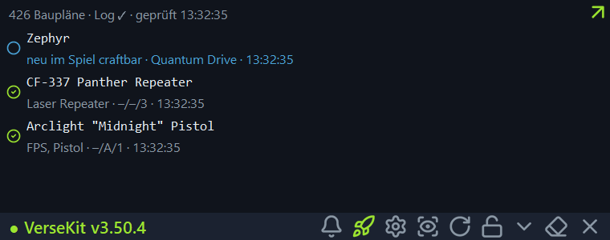

Dein Werkzeugkasten für Star Citizen — Baupläne, Aufträge, Herstellung, Handel und Hangar, live beim Spielen.
ehemals SC BP Watcher · Windows und Linux · ohne Konto, ohne Cloud
Kostenlos und quelloffen unter GPL-3.0. Eine Datei laden, starten, fertig.
Downloads
Links steht die Seitenleiste wie im Programm — dieselben Gruppen, dieselbe Reihenfolge. Die Bilder zeigen das Werkzeug mit Beispieldaten.

Hinweis: Das hier sind Bildschirmfotos, kein laufendes Programm — ein Klick ins Bild tut nichts. Das echte Werkzeug läuft auf deinem Rechner, nicht im Browser.
Schaltest du einen Bauplan frei, steht er sofort in der Liste. Verse-Kit liest die Protokolle des Spiels mit — ohne ins Spiel einzugreifen.
Im Spiel steht an jedem Auftrag, welche Baupläne er ausschüttet und welche davon dir noch fehlen. Ohne herauszutabben.
Zutaten, Zeiten und Preise zu jedem Gegenstand, dazu Fundorte, Konzentration und der Raffinerie-Vergleich je Erz.
Welche Schiffe dir gehören, was hineinpasst und was noch fehlt — mit Summe und Einkaufsroute.
Läden, Verkaufsorte und Routen, die sagen, was am Ende übrig bleibt — nicht nur, was etwas kostet.
Kein Konto, keine Cloud, keine Datensammlung. Verse-Kit holt nur Nachschlagedaten von Adressen, die dafür freigegeben sind.
Kein Python, keine Installation drumherum. Neue Versionen meldet das Programm selbst und spielt sie auf Knopfdruck ein.
Die Knöpfe laden immer die neueste Fassung. Alle Fassungen ansehen
Beim ersten Start meldet Windows „Der Computer wurde durch Windows geschützt“ — das passiert bei jedem Programm ohne teures Zertifikat. Auf „Weitere Informationen“ klicken, dann auf „Trotzdem ausführen“. Die Anleitung im Verzeichnis erklärt es mit Bildern.
Jede Version seit der ersten, mit allem, was neu, besser oder behoben ist — dieselben Texte, die das Programm unter „Was ist neu“ zeigt.